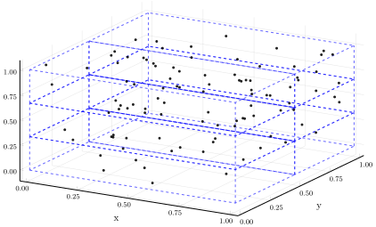
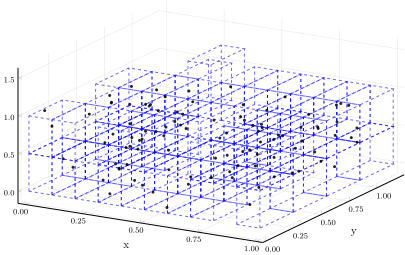
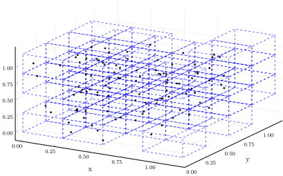
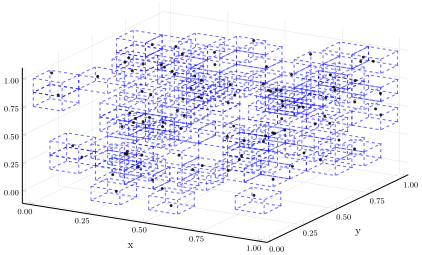
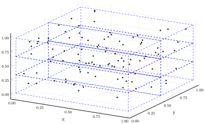
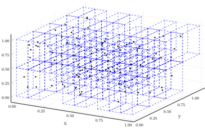
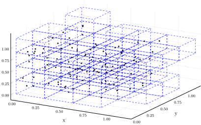
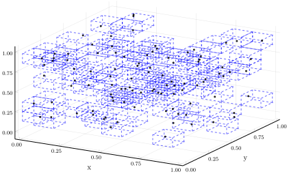

Types of partitions
Binning schemes
Currently, there are four types of rectangular partition schemes available, controlled by the parameter ϵ:
ϵ::Intdivides each axis intoϵintervals of the same size.ϵ::Floatdivides each axis into intervals of sizeϵ.ϵ::Vector{Int}divides the i-th axis intoϵᵢintervals of the same size.ϵ::Vector{Float64}divides the i-th axis into intervals of sizeϵᵢ.
There are two ways of representing a binning: either by encoding each bin by integers (see Coordinate representation), or by referencing them by the bin origin coordinates (see Integer encoding representation).
Visualizing partitions
To visualize how the different partition schemes work, you can feed the plot_partition a binning scheme ϵ along with a three-dimensional set of points. Of course, the partitions also work for data of any dimension.
julia> using StateSpaceReconstruction, Plots
julia> pgfplots()
Plots.PGFPlotsBackend()
julia> A = rand(3, 100)
3×100 Array{Float64,2}:
0.209832 0.699465 0.777014 0.0782029 … 0.434489 0.094059 0.622829
0.884307 0.799717 0.177427 0.840316 0.0854936 0.568564 0.392882
0.400403 0.520042 0.731488 0.116754 0.711744 0.400768 0.464859
Rectangular partition constructed by dividing the i-th axis interval into an integer number, ϵᵢ, of equal-length intervals.
julia> ϵ = [1, 2, 3]
3-element Array{Int64,1}:
1
2
3
julia> plot_partition(A, ϵ);

Rectangular partition constructed by dividing the i-th axis into intervals of length ϵᵢ.
julia> ϵ = [0.1, 0.3, 0.5]
3-element Array{Float64,1}:
0.1
0.3
0.5
julia> plot_partition(A, ϵ);

Rectangular partition constructed by dividing all axes into intervals of length ϵ.
julia> ϵ = 0.3
0.3
julia> plot_partition(A, ϵ);

Rectangular bins, divide all axes into ϵ equal-length intervals.
julia> ϵ = 8
8
julia> plot_partition(A, ϵ);

Visualizing partitions of embeddings
The same works with embeddings.
julia> A = rand(3, 100)
3×100 Array{Float64,2}:
0.737261 0.380625 0.6893 0.495445 … 0.325793 0.522332 0.933488
0.946574 0.37601 0.906789 0.410474 0.906004 0.723045 0.285312
0.829274 0.0268263 0.154126 0.784413 0.6461 0.392818 0.717565
julia> E = embed(A, [1, 2, 3], [1, 0, -5])
StateSpaceReconstruction.Embeddings.Embedding{3,Float64} with 94 points
Rectangular partition constructed by dividing the i-th axis of the embedding interval into an integer number, ϵᵢ, of equal-length intervals.
julia> ϵ = [1, 2, 3]
3-element Array{Int64,1}:
1
2
3
julia> plot_partition(A, ϵ);

Rectangular partition constructed by dividing the i-th axis of the embedding into intervals of length ϵᵢ.
julia> ϵ = [0.1, 0.3, 0.5]
3-element Array{Float64,1}:
0.1
0.3
0.5
julia> plot_partition(A, ϵ);

Rectangular partition constructed by dividing all axes of the embedding into intervals of length ϵ.
julia> ϵ = 0.3
0.3
julia> plot_partition(A, ϵ);

Rectangular bins, divide all axes of the embedding into ϵ equal-length intervals.
julia> ϵ = 8
8
julia> plot_partition(A, ϵ);

Customizing visualizations
#
StateSpaceReconstruction.Partitioning.plot_partition — Function.
plot_partition(pts::AbstractArray{T, 2}, ϵ;
mc = :blue, ms = 1.5, mα = 0.8,
lc = :black, lw = 2, ls = :dash, lα = 0.6) where T
Partition the space defined by pts into rectangular boxes with a binning scheme controlled by ϵ.
The following ϵ will work:
ϵ::Intdivide each axis intoϵintervals of the same size.ϵ::Floatdivide each axis into intervals of sizeϵ.ϵ::Vector{Int}divide the i-th axis intoϵᵢintervals of the same size.ϵ::Vector{Float64}divide the i-th axis into intervals of sizeϵᵢ.
The points are assumed to be provided as an array where each point is a column.
mc, ms and mα control the marker color, marker size and marker opacity, respectively. lc, lw, lα and ls control the line color, line width, line opacity and line style, respectively.
plot_partition(E::AbstractEmbedding, ϵ; vars = [1, 2, 3],
mc = :blue, ms = 2, mα = 0.8,
lc = :black, lw = 2, ls = :dash, lα = 0.6)
Partition the embedding into rectangular boxes with a binning scheme controlled by ϵ. If there are more than three variables in the embedding, you can set which one to use with the vars argument (by default, vars = [1, 2, 3]).
The following ϵ will work:
ϵ::Intdivide each axis intoϵintervals of the same size.ϵ::Floatdivide each axis into intervals of sizeϵ.ϵ::Vector{Int}divide the i-th axis intoϵᵢintervals of the same size.ϵ::Vector{Float64}divide the i-th axis into intervals of sizeϵᵢ.
mc, ms and mα control the marker color, marker size and marker opacity, respectively. lc, lw, lα and ls control the line color, line width, line opacity and line style, respectively.